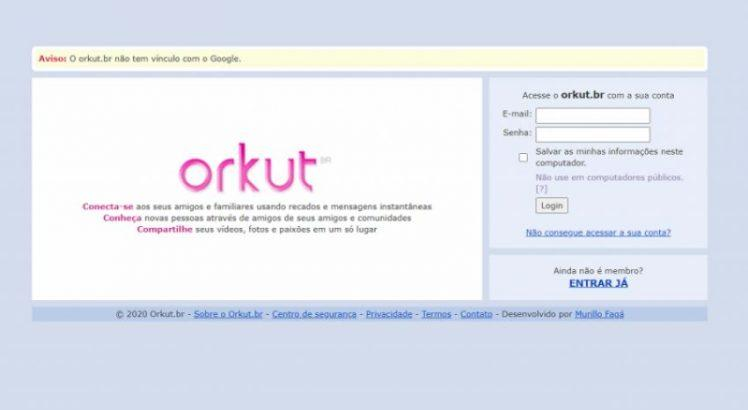

Biografia
Büyükkökten nasceu em Cônia, Turquia. Formou-se em engenharia informática e ciência da informação pela Universidade Bilkent de Ancara, e também realizou um mestrado e doutorado em ciência da computação pela Universidade Stanford, Estados Unidos. Sua pesquisa em Stanford se concentrou na pesquisa na Web e no uso eficiente do PDA. Orkut Büyükkökten também é um ex-gerente de produtos da Google.[1]
Ele esteve construindo e trabalhando em comunidades online desde 2000. Ele apresentou sua primeira rede social, chamada Club Nexus,[2] em Stanford no outono de 2001.[3] Club Nexus foi a primeira rede social específica para uma faculdade.
- Orkut
- Affinity Engines
- inCircle
- Club Nexus
- ex-gerente de produtos da Google
Principais trabalhos
Antigo Orkut
Clicando na imagem a baixo você sera redirecionado para o Orkut, para matar um pouco a saudade.
